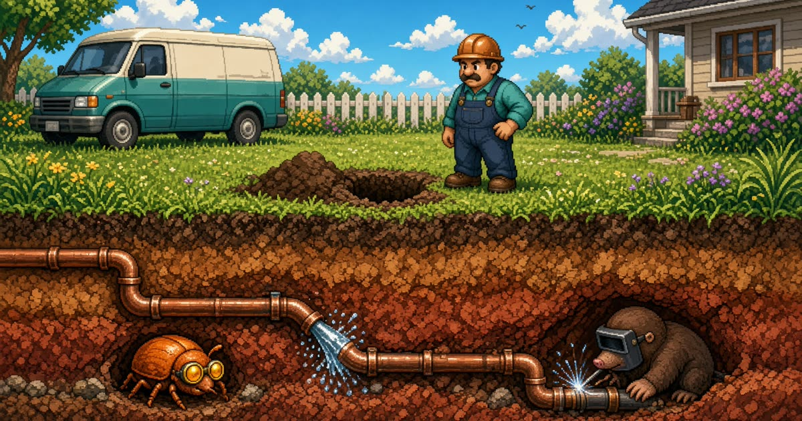
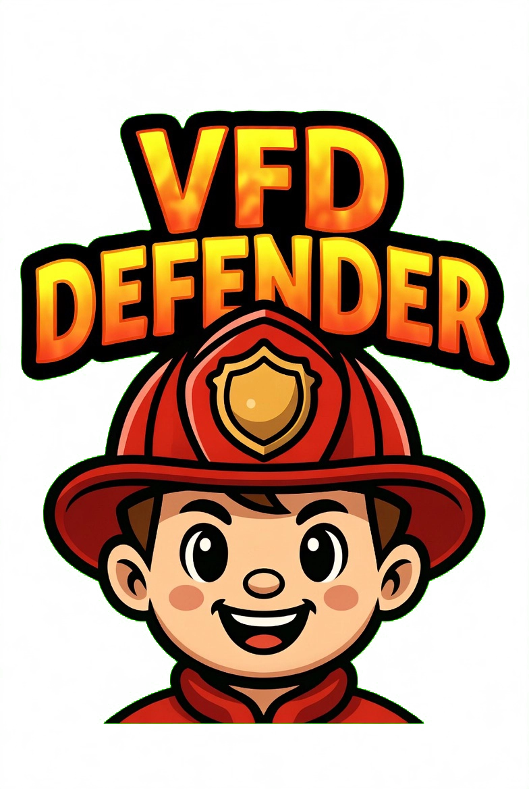
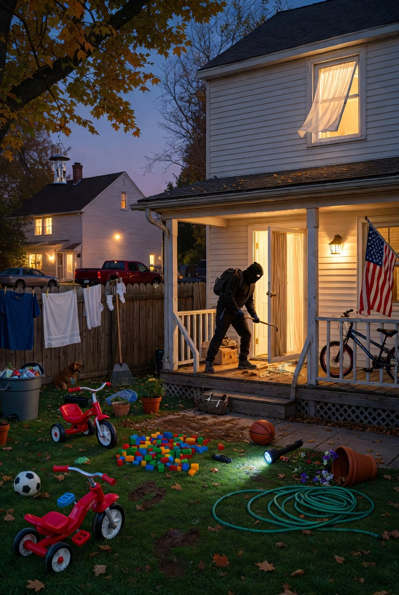
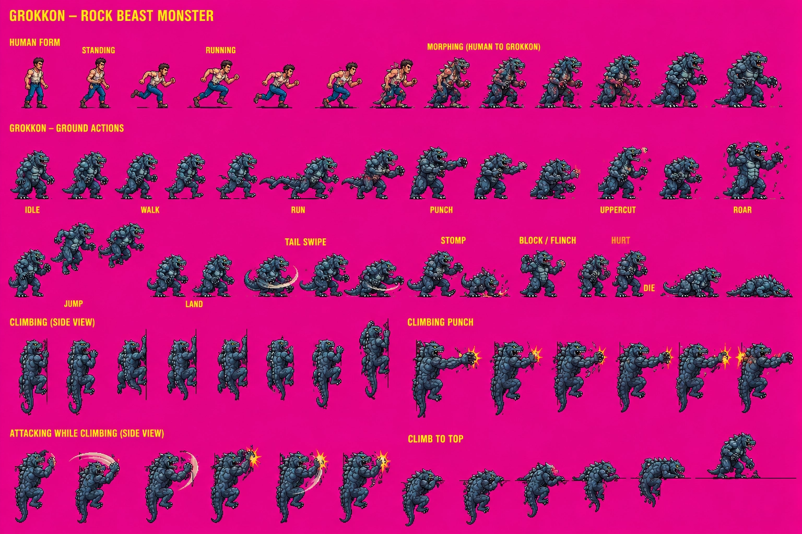
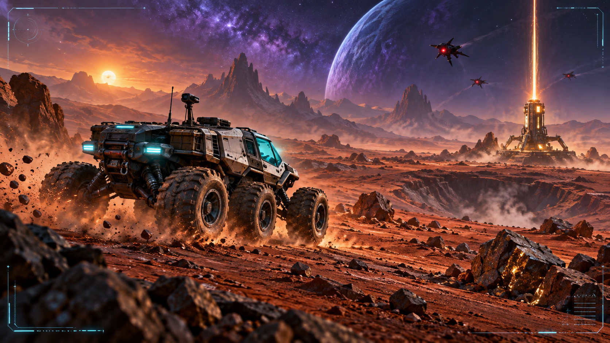

Pick something to play.
Each game below opens its own game screen. Prototypes are labeled so you know what to expect.
Games

JR's Plumbing
Wastewater repair arcade: dig, patch the main, and make it out.
Play JR's Plumbing
Tanks and More Tanks II: Warfront
A separate side-view artillery rebuild with destructible terrain and distinct weapon effects.
Try the V2 field test
VFDDefender
Standalone fire-response campaign build.
Play VFDDefenderSnake
Classic snake in a simple modern browser build.
Play Snake
Tanks and More Tanks
The original turn-based tank game, preserved as its own playable build.
Play the original tank game
PD Witness Recall
A training-style memory and recall game.
Play Witness RecallA quick board game
Try a prototype

Monsters Unlimited
Mobile-first giant monster city-smashing prototype with builder.
Try the monster prototype
Crater Basin — Tanks V3
3D space-tank sandbox with driving, aiming, pickups, and AI battles.
Try the V3 sandbox
Tibertron's Space Buggy
Named after Tiberius: a futuristic buggy sent across alien planets to recover resources.
Try the Space Buggy preview
Tibertron Space Buggy V2
Modern rover mission prototype with hills, craters, destructible rocks, enemies, and resource extraction.
Try the V2 rover prototype